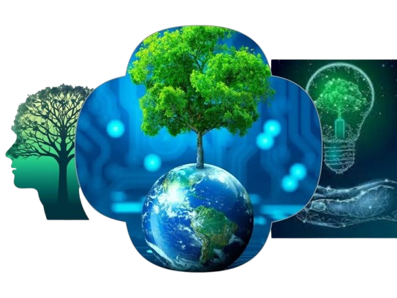

Mentes Criativas para um Futuro Verde
Unindo educação, arte e inovação para transformar o mundo com consciência ecológica.

Cuidar do meio ambiente, pensar no futuro, equilibrar natureza e consumo.
Ela está lá, construída no pátio do Centro de Educação Infantil Vovó Brandina, localizado no Centro de Araquari e abrigando os mais de 100 alunos do CEI quando o assunto é brincadeira consciente. Onde antes era apenas um espaço vazio, hoje é uma casa de pet.
Para mais informações sobre o projeto visite o siteÉ possível construir uma variedade de instrumentos musicais muito grande a partir de materiais simples, que usualmente encaminhamos para a reciclagem.
Para mais informações sobre o projeto visite o siteA obra de arte na imagem é uma escultura de tubarão gigante criada a partir de lixo marinho, principalmente plástico, recolhido de praias. Esta peça faz parte do projeto "Washed Ashore: Art to Save the Sea" (Arte para Salvar o Mar), iniciado por Angela Haseltine Pozzi.
Para mais informações sobre o projeto visite o siteTeste seus conhecimentos sobre sustentabilidade e inovação!
Se inscreva para receber conteudos, novidades e dicas importantes.